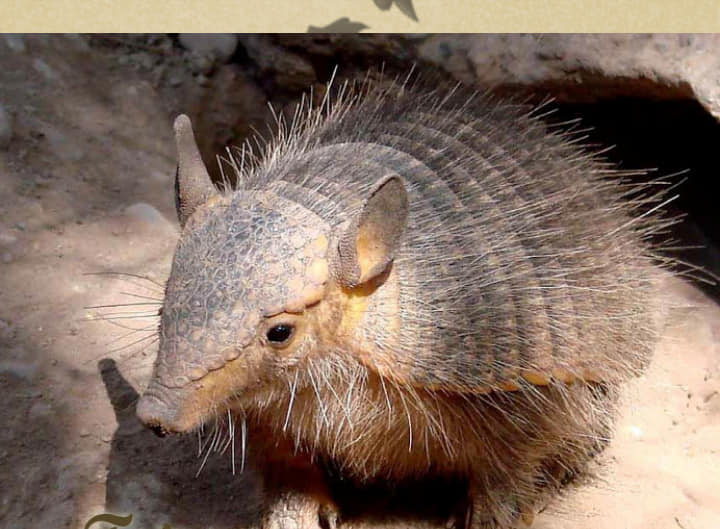
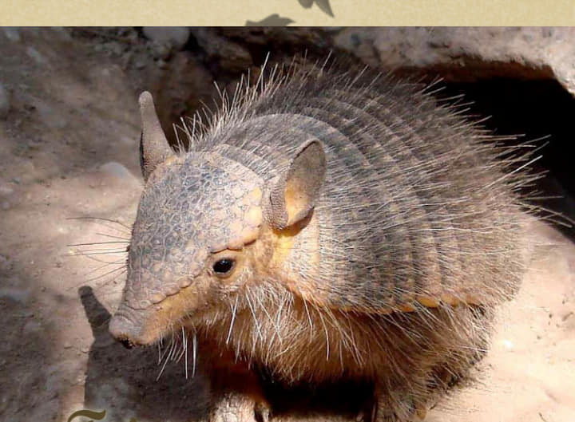

Mis Proyectos
En esta sección, encontrarás algunos de los proyectos más destacados en los que he trabajado, enfocados en la restauración ecológica, la conservación de la biodiversidad y el manejo sostenible de los recursos naturales. Cada iniciativa refleja mi compromiso con el cuidado del medio ambiente y el desarrollo de soluciones integrales que beneficien tanto a las comunidades locales como a los ecosistemas.
Proyecto Restauración de Bosques Nativos en Santiago del Estero
Este proyecto busca restaurar áreas de bosques nativos degradados en la región de Santiago del Estero mediante técnicas innovadoras de regeneración natural y reforestación activa. Nuestro enfoque no solo prioriza la recuperación del hábitat para la fauna local, sino que también fortalece los servicios ecosistémicos, como la regulación del ciclo hídrico y la captura de carbono. Gracias a la colaboración con comunidades rurales, fomentamos prácticas sostenibles y la valoración de los bosques como patrimonio natural.
Proyecto Conservación de Ecosistemas en Zonas Protegidas
Enfocado en la protección de áreas clave para la biodiversidad, este proyecto promueve estrategias de conservación en zonas protegidas mediante la implementación de monitoreos, restauración de hábitats y programas de educación ambiental. Trabajamos junto a instituciones locales y comunidades para garantizar la sostenibilidad a largo plazo, restaurando conexiones entre fragmentos de hábitats y promoviendo un equilibrio entre las actividades humanas y la preservación de la vida silvestre.
 
